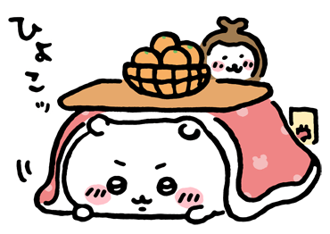
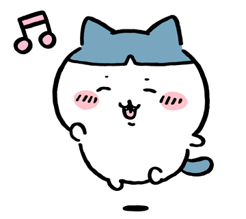
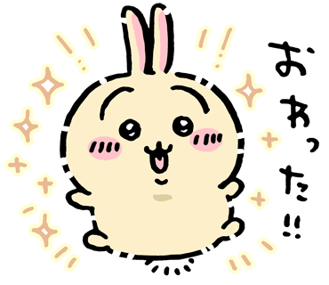
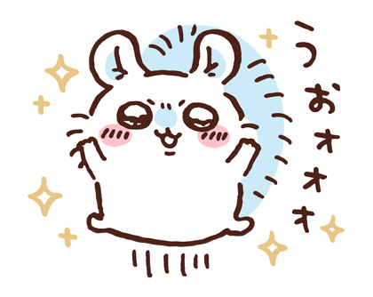

먼작귀
먼가 작고 귀여운 녀석 먼작귀 (˶• ﻌ •˶)
캐릭터들 (´∩｡• ᵕ •｡∩`)
치이카와 하치와레 우사기 모몽가
(사실 캐릭터 조금 더 있어요..)




치이카와
치이카와는 맨 처음 등장한 캐릭터로 햄스터로 추정된다.
성격은 매우 소심하고 여리며 수줍음이 많다. 겁이 많아서 자주 우는 모습을 보이는데 놀라거나 울 때 우..하거나 와와 하는 의성어를 낸다.
이 모습을 귀척하려는 모몽가가 따라하기도 한다.
하치와레
하치와레는 사교적이고 상냥한 성격으로,
치이카와의 시험을 응원하기 위해 같이 시험에 응시하거나 소심한 치이카와가 하지 못하는 말을 대신 해주는 등 무척 잘해준다.
우사기
장난을 잘 치는 마이페이스에 시끄럽고 활발한 성격을 가진 개구쟁이다.
신나거나 맛있는 음식을 먹을 때면 푸루루루 이얏하~! 하고 특유의 요상한 소리를 낸다.
모몽가
모몽가는 하늘다람쥐 캐릭터이지만 괴팍한성격을 가지고 있다.